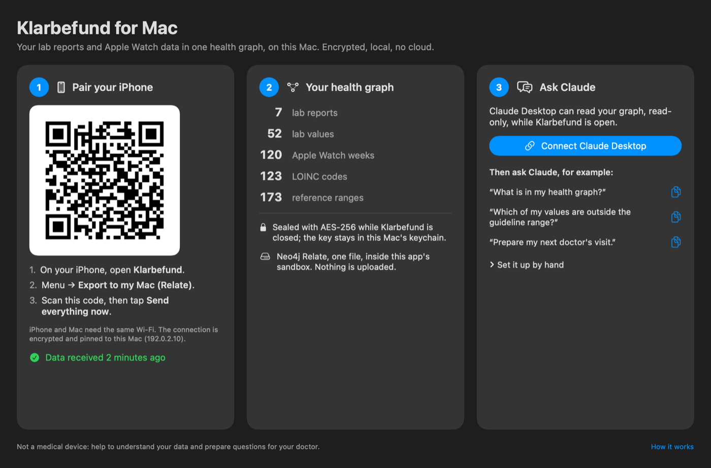

My local health graph.
Not the cloud's.
Paper lab reports and Apple Watch, in one private Relate graph on my iPhone and my Mac. Claude answers through Relate's MCP server, read-only.
Use ← → or the dots below. Everything on this page is clickable.
The problem
Relate on the iPhone
health.rl file under iOS Data Protection (complete): unreadable while the phone is lockedExport to my Mac
Klarbefund for Mac · TestFlight
TLS, hashing and signatures come from macOS itself: no bundled crypto. Same TestFlight link as the iPhone app.

Metadata model
Knowledge graph
The graph also holds the medical knowledge, each link with its source. Pick a risk:
Ask Claude
Claude Desktop writes the Cypher; Relate's MCP server answers read-only from a snapshot.
From graph to action
Values stay out of this public page; the video shows the real briefing.
Security
Relate's single file under FileProtectionType.complete, excluded from backup. Talks only to the paired Mac.
Klarbefund for Mac keeps the graph sealed (AES-256-GCM) while it is closed; the key never leaves the Mac's keychain. Pinned TLS or a USB cable, no cloud on the way.
The Klarbefund extension reads a snapshot copy, only while the Mac app is open; write queries are refused. Only the rows Claude asks for leave the Mac.
Try it
git clone https://github.com/ma3u/relate-hackathon-team cd relate-hackathon-team relate query --database examples/health-graph/health.rl --mode table <<< \ "MATCH (h:HealthRisk)<-[:MARKER_OF]-(:LoincCode)<-[:CODED_BY]-(o:Observation) RETURN h.name AS risk, count(o) AS values" relate serve --mcp stdio --database examples/health-graph/health.rl --read-only
The sample store is synthetic: no real person. README · Devpost · 3-minute version
Klarbefund on TestFlight
iPhone and Mac
testflight.apple.com/join/ssADSXX6